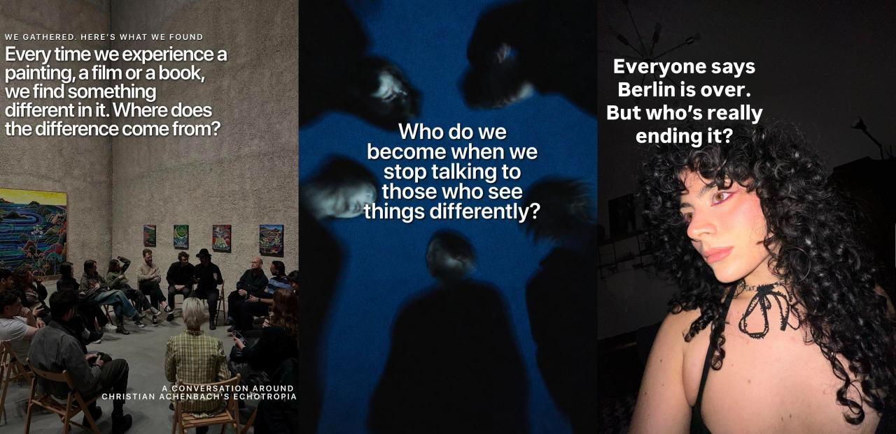

Instagram
@mae.community
See the account →
@mae.community
Exploring the questions shaping our lives.
A cultural brand built from zero: positioning, voice, editorial line and community, around one idea. Artists and experts present, everyone else answers.
107kFollowers
1,217Posts
2022Since